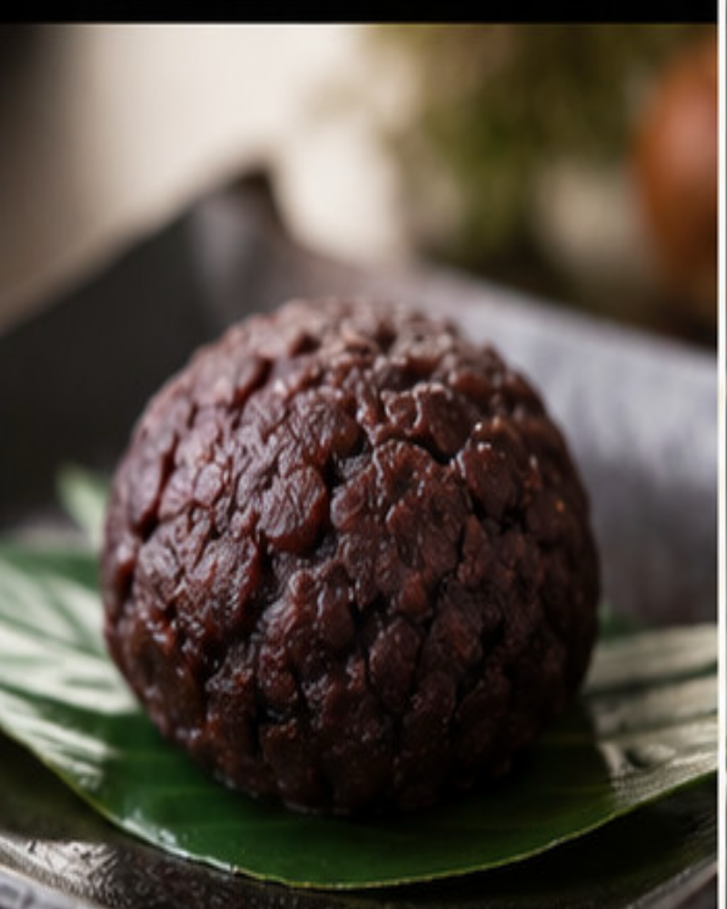
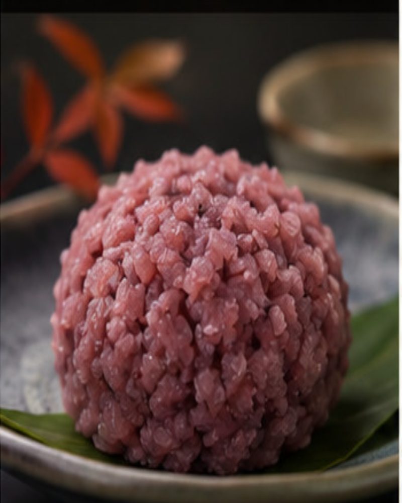
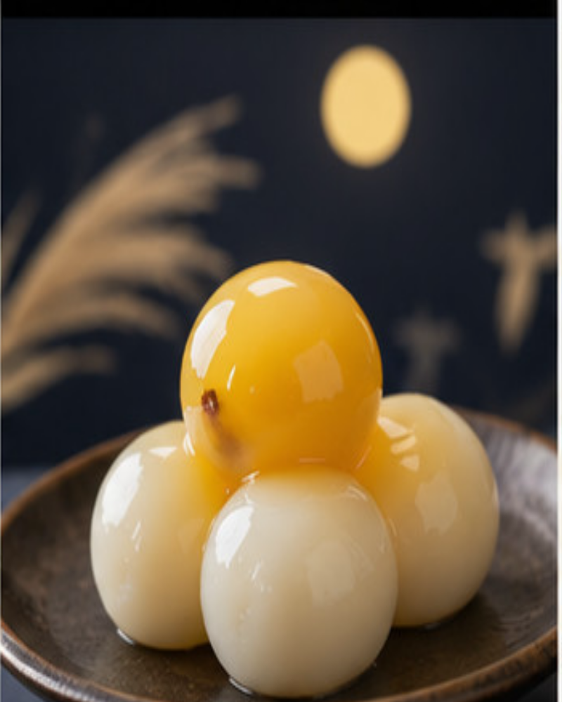
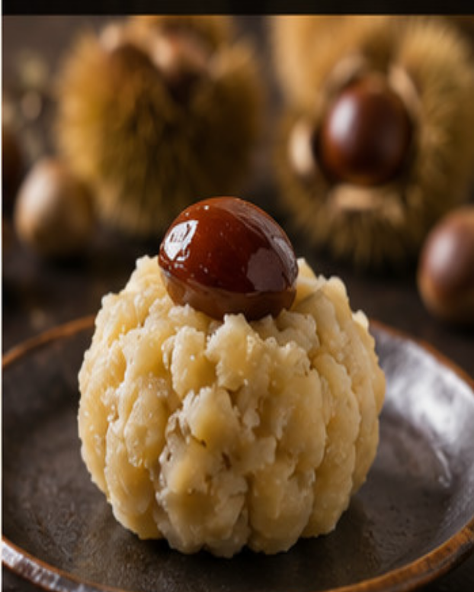
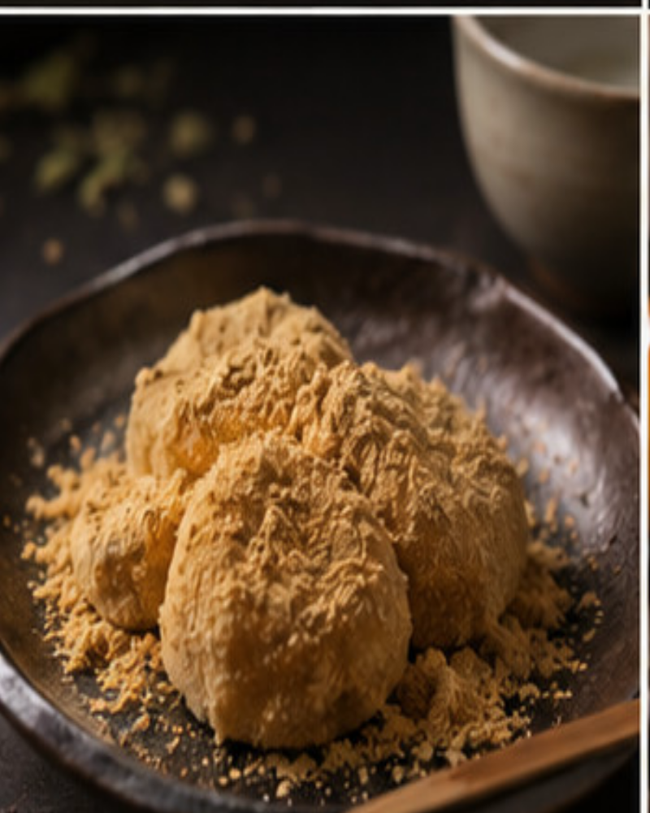
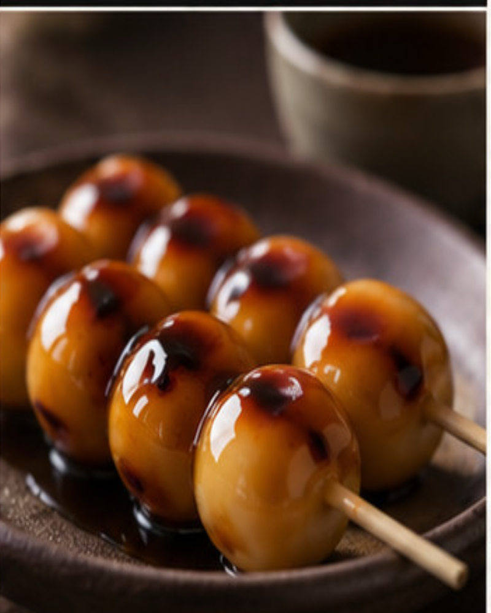
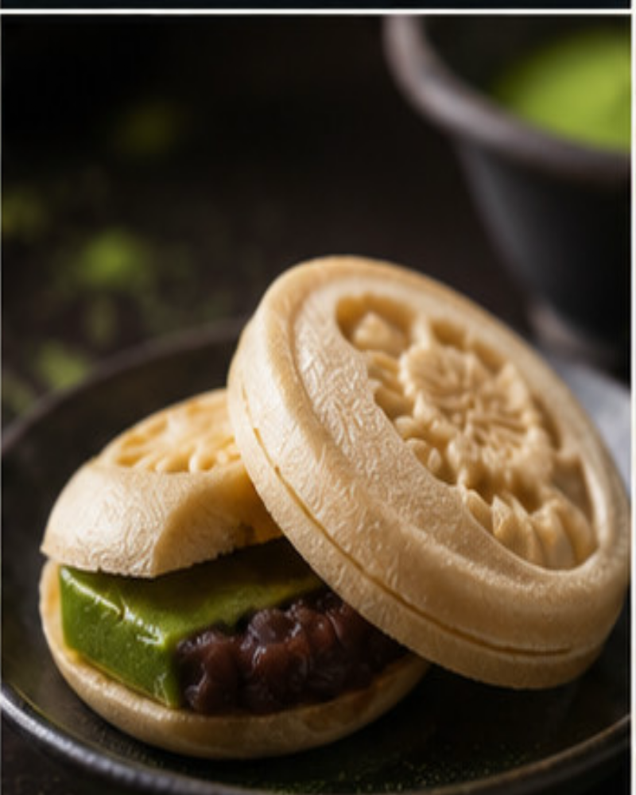
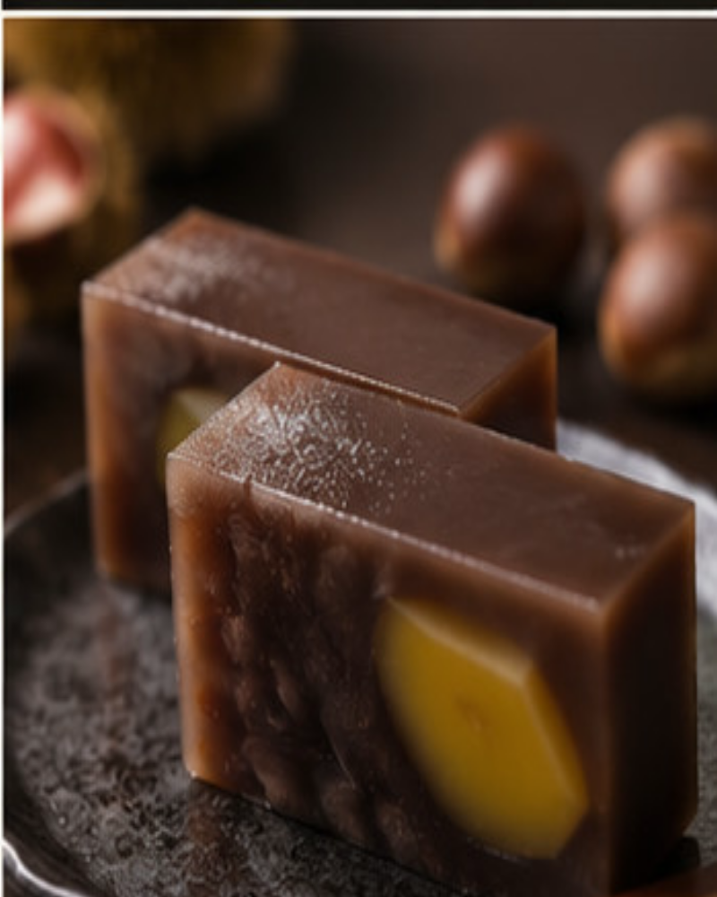

おはぎ
Ohagi
北海道産の小豆を丁寧に炊き上げた
なめらかな粒あんを、もち米で包みました。
Tsuki Usagi Wagashi — Autumn Collection
秋の限定品
満月の夜に宿る、秋の美味しさ。
Flavours of autumn, born beneath the full moon.
Collection を見るAutumn Confections
北海道・信州の素材を丁寧に選び、
月明かりの下で仕上げた、秋だけの味わいです。

おはぎ
Ohagi
北海道産の小豆を丁寧に炊き上げた
なめらかな粒あんを、もち米で包みました。

牡丹餅
Botamochi
もち米の粒感を残した館で包んだ、
上品な甘さの伝統の味わい。

月見団子
Tsukimi Dango
満月に見立てた黄味餡をのせた、
もちもちの白玉団子。

栗きんとん
Kuri Kinton
信州産の栗を贅沢に使用した、
季節限定の上生菓子。

きなこ餅
Kinako Mochi
香ばしいきなことやさしい甘さの餅。
素朴で懐かしい味わい。

みたらし団子
Mitarashi Dango
もちもちの団子に、甘辛のみたらしタレを
たっぷり絡めました。

抹茶最中
Matcha Monaka
香り高い抹茶餡と小豆餡を、
香ばしい最中種で挟みました。

栗羊羹
Kuri Yokan
栗の風味豊かな羊羹に、
大粒の栗を閉じ込めました。
秋の満月を仰ぎながら、
一つひとつ、手で丁寧に。
月兎和菓子は、日本の秋を
そのまま包んだ菓子を届けます。
Each confection is a quiet celebration of autumn —
shaped by hand, beneath the light of the harvest moon.